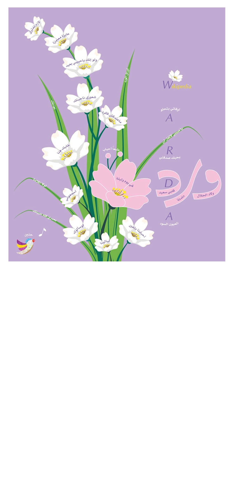

<audio id="f1" src="f1.mp3" preload="auto"></audio>
<audio id="f14" src="f14.mp3" preload="auto"></audio>


<script>

    function f11() {
        var audio = document.getElementById("f1");

        if (audio.duration > 0 && !audio.paused) {
            audio.pause();
            audio.currentTime = 0;
        } else {
            audio.play();
        }
    }
    
    
       function f114() {
        var audio = document.getElementById("f14");

        if (audio.duration > 0 && !audio.paused) {
            audio.pause();
            audio.currentTime = 0;
        } else {
            audio.play();
        }
    }

</script>


<map name="image-map">

    <area target="_blank" alt="" title="" href="" onclick="javascript:f11(); return false;"coords="981,789,964,760,919,865,874,932,784,973,810,1011,915,948" shape="poly">
     <area target="_blank" alt="" title="" href="" onclick="javascript:f114(); return false;"coords="59,1093,220,1254" shape="rect">

     <area target="_blank" alt="" title="" href="https://ar.wikipedia.org/wiki/%D9%88%D8%B1%D8%AF%D8%A9_%D8%A7%D9%84%D8%AC%D8%B2%D8%A7%D8%A6%D8%B1%D9%8A%D8%A9" coords="884,435,780,328" shape="rect">

  </map>
